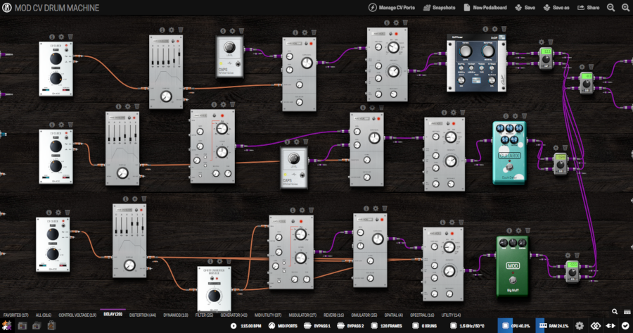

Modular Synth Basics¶
Scope of this page
Everything below is confirmed on the Stable update channel (checked against the current Stable ControlVoltage category listing). If you're adding to this page later, verify new additions against that same list first — see Confirming Stable availability.
This walks through building a simple modular-style synth voice on the Dwarf, entirely with plugins — no physical CV hardware needed. Read Using CV (Control Voltage) first if you haven't already; this page assumes you know how to enable and assign a CV port.
The building blocks¶
Sound source
- AMS VCO3 — oscillator. Multiple waveforms (sine, square, triangle, sawtooth), with CV inputs for frequency and pulse-width modulation, plus sync.
Shaping
- AMS VCF — voltage-controlled filter. Several low-pass and band-pass flavors, plus high-pass and notch. Frequency and resonance can both be CV-modulated.
- AMS VCA Lin — linear voltage-controlled amplifier. This is what turns a CV envelope into audible volume changes.
- AMS VCA Exp — the same idea with an exponential response instead of linear, which can feel more natural for volume/amplitude changes.
Modulation sources
- AMS Envelope — a CV envelope generator (attack, decay, sustain, release), with extra hold, delay, and time-scale controls.
- AMS LFO2 - Freq — a free-running low-frequency oscillator for slow, repeating modulation (filter sweeps, vibrato, tremolo).
- dm-LFO — a second, independent LFO plugin if you want more than one modulation rate going at once.
- MOD Random Generator — outputs a new random value each time it's triggered, within a min/max range you set. Good for generative patches.
- MOD CV Clock — a clock/pulse generator, useful as a steady trigger source for envelopes or the Random Generator.
Playing and utility
- MOD Multi Button to CV — turns a button press into a CV trigger, with hold-time and double-press detection. This is how you "play" a patch without a MIDI keyboard.
- MOD MIDI to CV mono / MIDI to CV Poly — converts incoming MIDI notes into pitch, velocity, and gate CV, if you'd rather play from a MIDI keyboard.
- MOD CV Parameter Modulation — shapes a CV signal (base value + modulation depth) before it hits a target parameter. Covered in more depth in Using CV.
- MOD Attenuverter Booster — attenuates, inverts, or boosts a CV signal — a quick way to flip or rescale a source without reaching for the full Parameter Modulation dialog.
- MOD Slew Rate Limiter — smooths sudden CV jumps into a ramp, useful for portamento-style pitch glides or softening a Random Generator's steps.
- MOD CV Round / MOD CV ABS — small math utilities for CV signals (rounding a value, or making it always positive).
- MOD Control to CV — exposes a knob as a CV source, for macro control. See Using CV.
- MOD CV meter — a visual level meter for a CV signal, handy for checking a patch is actually doing what you think it is while you build it.
Building a basic voice¶
This patch: press a button, hear a note with a shaped envelope and a filter sweep.
- Add AMS VCO3 to your pedalboard and connect its audio output to the Dwarf's output.
- Add MOD Multi Button to CV. This will be your "key." Assign it to a footswitch (see Assigning Controls) so you can trigger it live from the device.
- Add AMS Envelope. Connect the Multi Button's press-output to the Envelope's gate/trigger input.
- Add AMS VCA Lin (or VCA Exp). Route the audio from AMS VCO3 through it, then connect AMS Envelope's CV output to the VCA's CV input. Now the button press shapes the note's volume over time instead of just switching it on and off.
- Add AMS VCF between the VCO and the VCA (or after the VCA, if you prefer to filter the shaped signal). Route the audio through it.
- Add AMS LFO2 - Freq and connect its CV output to the VCF's Frequency CV input, for a slow filter sweep. Turn down the LFO's depth if the effect is too strong — or route it through CV Parameter Modulation or MOD Attenuverter Booster first for more control over the range.
- Save the pedalboard, then trigger your footswitch and listen.
From here, swapping VCO3's waveform, changing the envelope's attack/release, or adding dm-LFO as a second modulation source gets you a long way toward a proper synth voice — all without leaving the pedalboard.
Two more patches worth trying¶
Pitch-reactive filtering, using your own playing instead of an internal oscillator: feed your guitar or mic input into MOD/DISTRHO AudioToCV Pitch, and assign its CV output to a filter's cutoff — your own notes now sweep the filter as you play.
Generative modulation: trigger MOD Random Generator periodically (a MOD Multi Button to CV, or MOD CV Clock for a steady pulse), then run its output through a MOD Slew Rate Limiter before assigning it to a parameter — smoothed random movement instead of hard jumps.
Going further¶
- Play it from a MIDI keyboard instead of a footswitch: swap Multi Button to CV for MIDI to CV mono, connect a USB or DIN MIDI keyboard (see MIDI Controllers & Expression Pedals), and route its Pitch and Gate outputs into your VCO and Envelope instead.
- Macro control: once a patch has several modulation sources, use MOD Control to CV to tie multiple parameters to one physical knob — see Using CV.
- Debugging a patch: if something isn't moving the way you expect, drop a MOD CV meter on the signal in question to confirm it's actually present and in the range you think it is.
Confirming Stable availability¶
The plugin list on this page was checked against the actual Stable ControlVoltage category listing, not just against a plugin's individual store page or search results — both of those can surface plugins that exist in MOD's database without being published to Stable. Notably, not everything in the AMS suite is on this list: the sequencer (any step count), Sample&Hold, Noise2, VCO2, the mixers, and most of the rest of the ~65-module AMS bundle aren't confirmed Stable, so don't add them to this page without checking the current Stable category listing first (or asking falkTX / whoever owns plugin releases — see "Who to ask" in CONTRIBUTING.md).
Reference patches¶
The community has shared full synth pedalboards built this way — worth loading one and taking it apart to see how the routing works:
- MOD CV Drum Machine — a standalone drum machine built from CV plugins.

{kind=link}
Not independently re-verified
These reference pedalboards were found via search rather than confirmed against the current Stable plugin set — worth a quick check that they still load cleanly before pointing readers at them.
Next: Connecting Gear